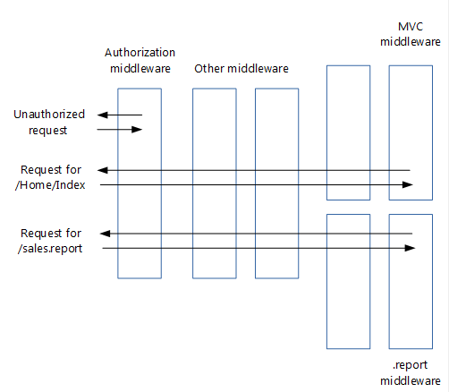

Migrating HTTP handlers and modules to ASP.NET Core middleware
By Matt Perdeck
This article shows how to migrate existing ASP.NET HTTP modules and handlers from system.webserver to ASP.NET Core middleware.
Modules and handlers revisited
Before proceeding to ASP.NET Core middleware, let's first recap how HTTP modules and handlers work:

Handlers are:
Classes that implement IHttpHandler
Used to handle requests with a given file name or extension, such as .report
Configured in Web.config
Modules are:
Classes that implement IHttpModule
Invoked for every request
Able to short-circuit (stop further processing of a request)
Able to add to the HTTP response, or create their own
Configured in Web.config
The order in which modules process incoming requests is determined by:
The application life cycle, which is a series events fired by ASP.NET: BeginRequest, AuthenticateRequest, etc. Each module can create a handler for one or more events.
For the same event, the order in which they are configured in Web.config.
In addition to modules, you can add handlers for the life cycle events to your Global.asax.cs file. These handlers run after the handlers in the configured modules.
From handlers and modules to middleware
Middleware are simpler than HTTP modules and handlers:
Modules, handlers, Global.asax.cs, Web.config (except for IIS configuration) and the application life cycle are gone
The roles of both modules and handlers have been taken over by middleware
Middleware are configured using code rather than in Web.config
Pipeline branching lets you send requests to specific middleware, based on not only the URL but also on request headers, query strings, etc.
Middleware are very similar to modules:
Invoked in principle for every request
Able to short-circuit a request, by not passing the request to the next middleware
Able to create their own HTTP response
Middleware and modules are processed in a different order:
Order of middleware is based on the order in which they are inserted into the request pipeline, while order of modules is mainly based on application life cycle events
Order of middleware for responses is the reverse from that for requests, while order of modules is the same for requests and responses

Note how in the image above, the authentication middleware short-circuited the request.
Migrating module code to middleware
An existing HTTP module will look similar to this:
// ASP.NET 4 module
using System;
using System.Web;
namespace MyApp.Modules
{
public class MyModule : IHttpModule
{
public void Dispose()
{
}
public void Init(HttpApplication application)
{
application.BeginRequest += (new EventHandler(this.Application_BeginRequest));
application.EndRequest += (new EventHandler(this.Application_EndRequest));
}
private void Application_BeginRequest(Object source, EventArgs e)
{
HttpContext context = ((HttpApplication)source).Context;
// Do something with context near the beginning of request processing.
}
private void Application_EndRequest(Object source, EventArgs e)
{
HttpContext context = ((HttpApplication)source).Context;
// Do something with context near the end of request processing.
}
}
}
As shown in the Middleware page, an ASP.NET Core middleware is a class that exposes an Invoke method taking an HttpContext and returning a Task. Your new middleware will look like this:
// ASP.NET Core middleware
using Microsoft.AspNetCore.Builder;
using Microsoft.AspNetCore.Http;
using System.Threading.Tasks;
namespace MyApp.Middleware
{
public class MyMiddleware
{
private readonly RequestDelegate _next;
public MyMiddleware(RequestDelegate next)
{
_next = next;
}
public async Task Invoke(HttpContext context)
{
// Do something with context near the beginning of request processing.
await _next.Invoke(context);
// Clean up.
}
}
public static class MyMiddlewareExtensions
{
public static IApplicationBuilder UseMyMiddleware(this IApplicationBuilder builder)
{
return builder.UseMiddleware<MyMiddleware>();
}
}
}
The above middleware template was taken from the section on writing middleware.
The MyMiddlewareExtensions helper class makes it easier to configure your middleware in your Startup class. The UseMyMiddleware method adds your middleware class to the request pipeline. Services required by the middleware get injected in the middleware's constructor.
Your module might terminate a request, for example if the user is not authorized:
// ASP.NET 4 module that may terminate the request
private void Application_BeginRequest(Object source, EventArgs e)
{
HttpContext context = ((HttpApplication)source).Context;
// Do something with context near the beginning of request processing.
if (TerminateRequest())
{
context.Response.End();
return;
}
}
A middleware handles this by not calling Invoke on the next middleware in the pipeline. Keep in mind that this does not fully terminate the request, because previous middlewares will still be invoked when the response makes its way back through the pipeline.
// ASP.NET Core middleware that may terminate the request
public async Task Invoke(HttpContext context)
{
// Do something with context near the beginning of request processing.
if (!TerminateRequest())
await _next.Invoke(context);
// Clean up.
}
When you migrate your module's functionality to your new middleware, you may find that your code doesn't compile because the HttpContext class has significantly changed in ASP.NET Core. Later on, you'll see how to migrate to the new ASP.NET Core HttpContext.
Migrating module insertion into the request pipeline
HTTP modules are typically added to the request pipeline using Web.config:
<?xml version="1.0" encoding="utf-8"?>
<!--ASP.NET 4 web.config-->
<configuration>
<system.webServer>
<modules>
<add name="MyModule" type="MyApp.Modules.MyModule"/>
</modules>
</system.webServer>
</configuration>
Convert this by adding your new middleware to the request pipeline in your Startup class:
public void Configure(IApplicationBuilder app, IHostingEnvironment env, ILoggerFactory loggerFactory)
{
loggerFactory.AddConsole(Configuration.GetSection("Logging"));
loggerFactory.AddDebug();
if (env.IsDevelopment())
{
app.UseDeveloperExceptionPage();
app.UseBrowserLink();
}
else
{
app.UseExceptionHandler("/Home/Error");
}
app.UseMyMiddleware();
app.UseMyMiddlewareWithParams();
var myMiddlewareOptions = Configuration.GetSection("MyMiddlewareOptionsSection").Get<MyMiddlewareOptions>();
var myMiddlewareOptions2 = Configuration.GetSection("MyMiddlewareOptionsSection2").Get<MyMiddlewareOptions>();
app.UseMyMiddlewareWithParams(myMiddlewareOptions);
app.UseMyMiddlewareWithParams(myMiddlewareOptions2);
app.UseMyTerminatingMiddleware();
// Create branch to the MyHandlerMiddleware.
// All requests ending in .report will follow this branch.
app.MapWhen(
context => context.Request.Path.ToString().EndsWith(".report"),
appBranch => {
// ... optionally add more middleware to this branch
appBranch.UseMyHandler();
});
app.MapWhen(
context => context.Request.Path.ToString().EndsWith(".context"),
appBranch => {
appBranch.UseHttpContextDemoMiddleware();
});
app.UseStaticFiles();
app.UseMvc(routes =>
{
routes.MapRoute(
name: "default",
template: "{controller=Home}/{action=Index}/{id?}");
});
}
The exact spot in the pipeline where you insert your new middleware depends on the event that it handled as a module (BeginRequest, EndRequest, etc.) and its order in your list of modules in Web.config.
As previously stated, there is no application life cycle in ASP.NET Core and the order in which responses are processed by middleware differs from the order used by modules. This could make your ordering decision more challenging.
If ordering becomes a problem, you could split your module into multiple middleware components that can be ordered independently.
Migrating handler code to middleware
An HTTP handler looks something like this:
// ASP.NET 4 handler
using System.Web;
namespace MyApp.HttpHandlers
{
public class MyHandler : IHttpHandler
{
public bool IsReusable { get { return true; } }
public void ProcessRequest(HttpContext context)
{
string response = GenerateResponse(context);
context.Response.ContentType = GetContentType();
context.Response.Output.Write(response);
}
// ...
private string GenerateResponse(HttpContext context)
{
string title = context.Request.QueryString["title"];
return string.Format("Title of the report: {0}", title);
}
private string GetContentType()
{
return "text/plain";
}
}
}
In your ASP.NET Core project, you would translate this to a middleware similar to this:
// ASP.NET Core middleware migrated from a handler
using Microsoft.AspNetCore.Builder;
using Microsoft.AspNetCore.Http;
using System.Threading.Tasks;
namespace MyApp.Middleware
{
public class MyHandlerMiddleware
{
// Must have constructor with this signature, otherwise exception at run time
public MyHandlerMiddleware(RequestDelegate next)
{
// This is an HTTP Handler, so no need to store next
}
public async Task Invoke(HttpContext context)
{
string response = GenerateResponse(context);
context.Response.ContentType = GetContentType();
await context.Response.WriteAsync(response);
}
// ...
private string GenerateResponse(HttpContext context)
{
string title = context.Request.Query["title"];
return string.Format("Title of the report: {0}", title);
}
private string GetContentType()
{
return "text/plain";
}
}
public static class MyHandlerExtensions
{
public static IApplicationBuilder UseMyHandler(this IApplicationBuilder builder)
{
return builder.UseMiddleware<MyHandlerMiddleware>();
}
}
}
This middleware is very similar to the middleware corresponding to modules. The only real difference is that here there is no call to _next.Invoke(context). That makes sense, because the handler is at the end of the request pipeline, so there will be no next middleware to invoke.
Migrating handler insertion into the request pipeline
Configuring an HTTP handler is done in Web.config and looks something like this:
<?xml version="1.0" encoding="utf-8"?>
<!--ASP.NET 4 web.config-->
<configuration>
<system.webServer>
<handlers>
<add name="MyHandler" verb="*" path="*.report" type="MyApp.HttpHandlers.MyHandler" resourceType="Unspecified" preCondition="integratedMode"/>
</handlers>
</system.webServer>
</configuration>
You could convert this by adding your new handler middleware to the request pipeline in your Startup class, similar to middleware converted from modules. The problem with that approach is that it would send all requests to your new handler middleware. However, you only want requests with a given extension to reach your middleware. That would give you the same functionality you had with your HTTP handler.
One solution is to branch the pipeline for requests with a given extension, using the MapWhen extension method. You do this in the same Configure method where you add the other middleware:
public void Configure(IApplicationBuilder app, IHostingEnvironment env, ILoggerFactory loggerFactory)
{
loggerFactory.AddConsole(Configuration.GetSection("Logging"));
loggerFactory.AddDebug();
if (env.IsDevelopment())
{
app.UseDeveloperExceptionPage();
app.UseBrowserLink();
}
else
{
app.UseExceptionHandler("/Home/Error");
}
app.UseMyMiddleware();
app.UseMyMiddlewareWithParams();
var myMiddlewareOptions = Configuration.GetSection("MyMiddlewareOptionsSection").Get<MyMiddlewareOptions>();
var myMiddlewareOptions2 = Configuration.GetSection("MyMiddlewareOptionsSection2").Get<MyMiddlewareOptions>();
app.UseMyMiddlewareWithParams(myMiddlewareOptions);
app.UseMyMiddlewareWithParams(myMiddlewareOptions2);
app.UseMyTerminatingMiddleware();
// Create branch to the MyHandlerMiddleware.
// All requests ending in .report will follow this branch.
app.MapWhen(
context => context.Request.Path.ToString().EndsWith(".report"),
appBranch => {
// ... optionally add more middleware to this branch
appBranch.UseMyHandler();
});
app.MapWhen(
context => context.Request.Path.ToString().EndsWith(".context"),
appBranch => {
appBranch.UseHttpContextDemoMiddleware();
});
app.UseStaticFiles();
app.UseMvc(routes =>
{
routes.MapRoute(
name: "default",
template: "{controller=Home}/{action=Index}/{id?}");
});
}
MapWhen takes these parameters:
A lambda that takes the
HttpContextand returnstrueif the request should go down the branch. This means you can branch requests not just based on their extension, but also on request headers, query string parameters, etc.A lambda that takes an
IApplicationBuilderand adds all the middleware for the branch. This means you can add additional middleware to the branch in front of your handler middleware.
Middleware added to the pipeline before the branch will be invoked on all requests; the branch will have no impact on them.
Loading middleware options using the options pattern
Some modules and handlers have configuration options that are stored in Web.config. However, in ASP.NET Core a new configuration model is used in place of Web.config.
The new configuration system gives you these options to solve this:
Directly inject the options into the middleware, as shown in the next section.
Use the options pattern:
Create a class to hold your middleware options, for example:
public class MyMiddlewareOptions { public string Param1 { get; set; } public string Param2 { get; set; } }Store the option values
The configuration system allows you to store option values anywhere you want. However, most sites use appsettings.json, so we'll take that approach:
{ "MyMiddlewareOptionsSection": { "Param1": "Param1Value", "Param2": "Param2Value" } }MyMiddlewareOptionsSection here is a section name. It doesn't have to be the same as the name of your options class.
Associate the option values with the options class
The options pattern uses ASP.NET Core's dependency injection framework to associate the options type (such as
MyMiddlewareOptions) with aMyMiddlewareOptionsobject that has the actual options.Update your
Startupclass:If you're using appsettings.json, add it to the configuration builder in the
Startupconstructor:public Startup(IHostingEnvironment env) { var builder = new ConfigurationBuilder() .SetBasePath(env.ContentRootPath) .AddJsonFile("appsettings.json", optional: true, reloadOnChange: true) .AddJsonFile($"appsettings.{env.EnvironmentName}.json", optional: true) .AddEnvironmentVariables(); Configuration = builder.Build(); }Configure the options service:
public void ConfigureServices(IServiceCollection services) { // Setup options service services.AddOptions(); // Load options from section "MyMiddlewareOptionsSection" services.Configure<MyMiddlewareOptions>( Configuration.GetSection("MyMiddlewareOptionsSection")); // Add framework services. services.AddMvc(); }Associate your options with your options class:
public void ConfigureServices(IServiceCollection services) { // Setup options service services.AddOptions(); // Load options from section "MyMiddlewareOptionsSection" services.Configure<MyMiddlewareOptions>( Configuration.GetSection("MyMiddlewareOptionsSection")); // Add framework services. services.AddMvc(); }
Inject the options into your middleware constructor. This is similar to injecting options into a controller.
public class MyMiddlewareWithParams { private readonly RequestDelegate _next; private readonly MyMiddlewareOptions _myMiddlewareOptions; public MyMiddlewareWithParams(RequestDelegate next, IOptions<MyMiddlewareOptions> optionsAccessor) { _next = next; _myMiddlewareOptions = optionsAccessor.Value; } public async Task Invoke(HttpContext context) { // Do something with context near the beginning of request processing // using configuration in _myMiddlewareOptions await _next.Invoke(context); // Do something with context near the end of request processing // using configuration in _myMiddlewareOptions } }The UseMiddleware extension method that adds your middleware to the
IApplicationBuildertakes care of dependency injection.This is not limited to
IOptionsobjects. Any other object that your middleware requires can be injected this way.
Loading middleware options through direct injection
The options pattern has the advantage that it creates loose coupling between options values and their consumers. Once you've associated an options class with the actual options values, any other class can get access to the options through the dependency injection framework. There is no need to pass around options values.
This breaks down though if you want to use the same middleware twice, with different options. For example an authorization middleware used in different branches allowing different roles. You can't associate two different options objects with the one options class.
The solution is to get the options objects with the actual options values in your Startup class and pass those directly to each instance of your middleware.
Add a second key to appsettings.json
To add a second set of options to the appsettings.json file, use a new key to uniquely identify it:
{ "MyMiddlewareOptionsSection2": { "Param1": "Param1Value2", "Param2": "Param2Value2" }, "MyMiddlewareOptionsSection": { "Param1": "Param1Value", "Param2": "Param2Value" } }Retrieve options values and pass them to middleware. The
Use...extension method (which adds your middleware to the pipeline) is a logical place to pass in the option values:public void Configure(IApplicationBuilder app, IHostingEnvironment env, ILoggerFactory loggerFactory) { loggerFactory.AddConsole(Configuration.GetSection("Logging")); loggerFactory.AddDebug(); if (env.IsDevelopment()) { app.UseDeveloperExceptionPage(); app.UseBrowserLink(); } else { app.UseExceptionHandler("/Home/Error"); } app.UseMyMiddleware(); app.UseMyMiddlewareWithParams(); var myMiddlewareOptions = Configuration.GetSection("MyMiddlewareOptionsSection").Get<MyMiddlewareOptions>(); var myMiddlewareOptions2 = Configuration.GetSection("MyMiddlewareOptionsSection2").Get<MyMiddlewareOptions>(); app.UseMyMiddlewareWithParams(myMiddlewareOptions); app.UseMyMiddlewareWithParams(myMiddlewareOptions2); app.UseMyTerminatingMiddleware(); // Create branch to the MyHandlerMiddleware. // All requests ending in .report will follow this branch. app.MapWhen( context => context.Request.Path.ToString().EndsWith(".report"), appBranch => { // ... optionally add more middleware to this branch appBranch.UseMyHandler(); }); app.MapWhen( context => context.Request.Path.ToString().EndsWith(".context"), appBranch => { appBranch.UseHttpContextDemoMiddleware(); }); app.UseStaticFiles(); app.UseMvc(routes => { routes.MapRoute( name: "default", template: "{controller=Home}/{action=Index}/{id?}"); }); }Enable middleware to take an options parameter. Provide an overload of the
Use...extension method (that takes the options parameter and passes it toUseMiddleware). WhenUseMiddlewareis called with parameters, it passes the parameters to your middleware constructor when it instantiates the middleware object.public static class MyMiddlewareWithParamsExtensions { public static IApplicationBuilder UseMyMiddlewareWithParams( this IApplicationBuilder builder) { return builder.UseMiddleware<MyMiddlewareWithParams>(); } public static IApplicationBuilder UseMyMiddlewareWithParams( this IApplicationBuilder builder, MyMiddlewareOptions myMiddlewareOptions) { return builder.UseMiddleware<MyMiddlewareWithParams>( new OptionsWrapper<MyMiddlewareOptions>(myMiddlewareOptions)); } }Note how this wraps the options object in an
OptionsWrapperobject. This implementsIOptions, as expected by the middleware constructor.
Migrating to the new HttpContext
You saw earlier that the Invoke method in your middleware takes a parameter of type HttpContext:
public async Task Invoke(HttpContext context)
HttpContext has significantly changed in ASP.NET Core. This section shows how to translate the most commonly used properties of System.Web.HttpContext to the new Microsoft.AspNetCore.Http.HttpContext.
HttpContext
HttpContext.Items translates to:
IDictionary<object, object> items = httpContext.Items;
Unique request ID (no System.Web.HttpContext counterpart)
Gives you a unique id for each request. Very useful to include in your logs.
string requestId = httpContext.TraceIdentifier;
HttpContext.Request
HttpContext.Request.HttpMethod translates to:
string httpMethod = httpContext.Request.Method;
HttpContext.Request.QueryString translates to:
IQueryCollection queryParameters = httpContext.Request.Query;
// If no query parameter "key" used, values will have 0 items
// If single value used for a key (...?key=v1), values will have 1 item ("v1")
// If key has multiple values (...?key=v1&key=v2), values will have 2 items ("v1" and "v2")
IList<string> values = queryParameters["key"];
// If no query parameter "key" used, value will be ""
// If single value used for a key (...?key=v1), value will be "v1"
// If key has multiple values (...?key=v1&key=v2), value will be "v1,v2"
string value = queryParameters["key"].ToString();
HttpContext.Request.Url and HttpContext.Request.RawUrl translate to:
// using Microsoft.AspNetCore.Http.Extensions;
var url = httpContext.Request.GetDisplayUrl();
HttpContext.Request.IsSecureConnection translates to:
var isSecureConnection = httpContext.Request.IsHttps;
HttpContext.Request.UserHostAddress translates to:
var userHostAddress = httpContext.Connection.RemoteIpAddress?.ToString();
HttpContext.Request.Cookies translates to:
IRequestCookieCollection cookies = httpContext.Request.Cookies;
string unknownCookieValue = cookies["unknownCookie"]; // will be null (no exception)
string knownCookieValue = cookies["cookie1name"]; // will be actual value
HttpContext.Request.RequestContext.RouteData translates to:
var routeValue = httpContext.GetRouteValue("key");
HttpContext.Request.Headers translates to:
// using Microsoft.AspNetCore.Http.Headers;
// using Microsoft.Net.Http.Headers;
IHeaderDictionary headersDictionary = httpContext.Request.Headers;
// GetTypedHeaders extension method provides strongly typed access to many headers
var requestHeaders = httpContext.Request.GetTypedHeaders();
CacheControlHeaderValue cacheControlHeaderValue = requestHeaders.CacheControl;
// For unknown header, unknownheaderValues has zero items and unknownheaderValue is ""
IList<string> unknownheaderValues = headersDictionary["unknownheader"];
string unknownheaderValue = headersDictionary["unknownheader"].ToString();
// For known header, knownheaderValues has 1 item and knownheaderValue is the value
IList<string> knownheaderValues = headersDictionary[HeaderNames.AcceptLanguage];
string knownheaderValue = headersDictionary[HeaderNames.AcceptLanguage].ToString();
HttpContext.Request.UserAgent translates to:
string userAgent = headersDictionary[HeaderNames.UserAgent].ToString();
HttpContext.Request.UrlReferrer translates to:
string urlReferrer = headersDictionary[HeaderNames.Referer].ToString();
HttpContext.Request.ContentType translates to:
// using Microsoft.Net.Http.Headers;
MediaTypeHeaderValue mediaHeaderValue = requestHeaders.ContentType;
string contentType = mediaHeaderValue?.MediaType; // ex. application/x-www-form-urlencoded
string contentMainType = mediaHeaderValue?.Type; // ex. application
string contentSubType = mediaHeaderValue?.SubType; // ex. x-www-form-urlencoded
System.Text.Encoding requestEncoding = mediaHeaderValue?.Encoding;
HttpContext.Request.Form translates to:
if (httpContext.Request.HasFormContentType)
{
IFormCollection form;
form = httpContext.Request.Form; // sync
// Or
form = await httpContext.Request.ReadFormAsync(); // async
string firstName = form["firstname"];
string lastName = form["lastname"];
}
Warning
Read form values only if the content sub type is x-www-form-urlencoded or form-data.
HttpContext.Request.InputStream translates to:
string inputBody;
using (var reader = new System.IO.StreamReader(
httpContext.Request.Body, System.Text.Encoding.UTF8))
{
inputBody = reader.ReadToEnd();
}
Warning
Use this code only in a handler type middleware, at the end of a pipeline.
You can read the raw body as shown above only once per request. Middleware trying to read the body after the first read will read an empty body.
This does not apply to reading a form as shown earlier, because that is done from a buffer.
HttpContext.Response
HttpContext.Response.Status and HttpContext.Response.StatusDescription translate to:
// using Microsoft.AspNetCore.Http;
httpContext.Response.StatusCode = StatusCodes.Status200OK;
HttpContext.Response.ContentEncoding and HttpContext.Response.ContentType translate to:
// using Microsoft.Net.Http.Headers;
var mediaType = new MediaTypeHeaderValue("application/json");
mediaType.Encoding = System.Text.Encoding.UTF8;
httpContext.Response.ContentType = mediaType.ToString();
HttpContext.Response.ContentType on its own also translates to:
httpContext.Response.ContentType = "text/html";
HttpContext.Response.Output translates to:
string responseContent = GetResponseContent();
await httpContext.Response.WriteAsync(responseContent);
HttpContext.Response.TransmitFile
Serving up a file is discussed here.
HttpContext.Response.Headers
Sending response headers is complicated by the fact that if you set them after anything has been written to the response body, they will not be sent.
The solution is to set a callback method that will be called right before writing to the response starts. This is best done at the start of the Invoke method in your middleware. It is this callback method that sets your response headers.
The following code sets a callback method called SetHeaders:
public async Task Invoke(HttpContext httpContext)
{
// ...
httpContext.Response.OnStarting(SetHeaders, state: httpContext);
The SetHeaders callback method would look like this:
// using Microsoft.AspNet.Http.Headers;
// using Microsoft.Net.Http.Headers;
private Task SetHeaders(object context)
{
var httpContext = (HttpContext)context;
// Set header with single value
httpContext.Response.Headers["ResponseHeaderName"] = "headerValue";
// Set header with multiple values
string[] responseHeaderValues = new string[] { "headerValue1", "headerValue1" };
httpContext.Response.Headers["ResponseHeaderName"] = responseHeaderValues;
// Translating ASP.NET 4's HttpContext.Response.RedirectLocation
httpContext.Response.Headers[HeaderNames.Location] = "http://www.example.com";
// Or
httpContext.Response.Redirect("http://www.example.com");
// GetTypedHeaders extension method provides strongly typed access to many headers
var responseHeaders = httpContext.Response.GetTypedHeaders();
// Translating ASP.NET 4's HttpContext.Response.CacheControl
responseHeaders.CacheControl = new CacheControlHeaderValue
{
MaxAge = new System.TimeSpan(365, 0, 0, 0)
// Many more properties available
};
// If you use .Net 4.6+, Task.CompletedTask will be a bit faster
return Task.FromResult(0);
}
HttpContext.Response.Cookies
Cookies travel to the browser in a Set-Cookie response header. As a result, sending cookies requires the same callback as used for sending response headers:
public async Task Invoke(HttpContext httpContext)
{
// ...
httpContext.Response.OnStarting(SetCookies, state: httpContext);
httpContext.Response.OnStarting(SetHeaders, state: httpContext);
The SetCookies callback method would look like the following:
private Task SetCookies(object context)
{
var httpContext = (HttpContext)context;
IResponseCookies responseCookies = httpContext.Response.Cookies;
responseCookies.Append("cookie1name", "cookie1value");
responseCookies.Append("cookie2name", "cookie2value",
new CookieOptions { Expires = System.DateTime.Now.AddDays(5), HttpOnly = true });
// If you use .Net 4.6+, Task.CompletedTask will be a bit faster
return Task.FromResult(0);
}